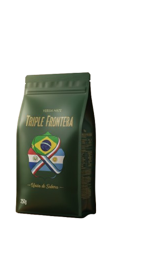

Triple
Frontera

Legado Natural
Cosecha seleccionada en el corazón de Misiones. 24 meses de estacionamiento.
Materia
Argentina • Original

Cosecha seleccionada en el corazón de Misiones. 24 meses de estacionamiento.
No intervenimos en el proceso. Solo observamos cómo la naturaleza transforma la hoja verde en una experiencia profunda, equilibrada y persistente.

Deslice horizontalmente la técnica maestra.
Incline el recipiente hasta que la yerba forme una montaña compacta sobre un lateral. Este ángulo de 45° protege la hoja y asegura que el sabor no se agote en las primeras cebadas.
Vierta un poco de agua tibia en el vacío inferior. Deje que la yerba absorba la humedad y se expanda durante un minuto. Este paso elimina la acidez excesiva y abre el aroma.
Agregue agua a 75°C de forma rítmica. Mantenga la parte superior de la montaña seca. Es el aroma de la hoja seca el que envuelve cada sorbo, creando una experiencia infinita.